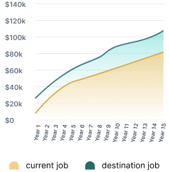
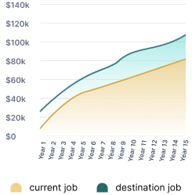

This chart compares the wage differences between an origin job and a destination job within the water industry.
Salary Progression Over Time


Highlights
In the next 5 years, you will earn $133,848 more in the Wastewater Technician role compared to your current job.
In the next 10 years, you will earn $321,474 more in the Wastewater Technician role compared to your current job.
In the next 15 years, you will earn $580,410 more in the Wastewater Technician role compared to than your current job.
This chart compares the projected salary growth over 15 years between an origin job and a destination job in the water industry.
Salary Progression Over Time
 

Highlights
At year 5, the salary in the Wastewater Technician role is $35,837 higher than in your current job.
At year 10, the salary in the Wastewater Technician role is $53,568 higher than in your current job.
At year 15, the salary in the Wastewater Technician role is $78,189 higher than in your current job.
Now that you've uncovered the economic impact of entering the water industry, take the next step with our Water Utility Career Map.
Explore diverse roles in the water industry from entry to senior levels and discover the skills, training, and certifications needed to advance your career.
Get started